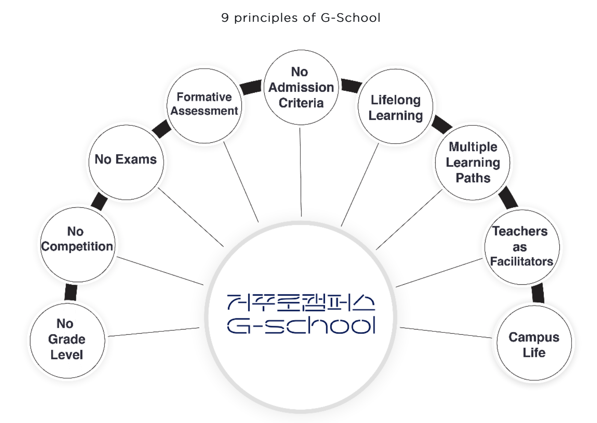
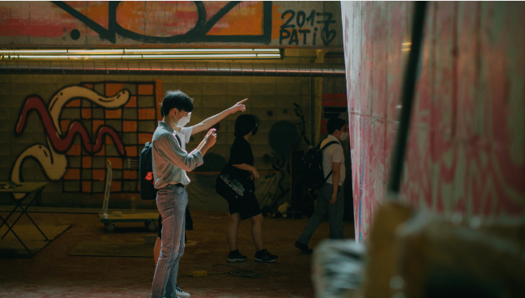
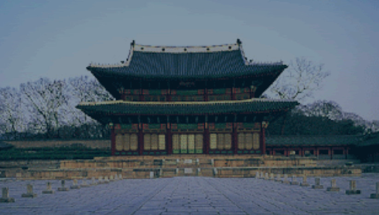
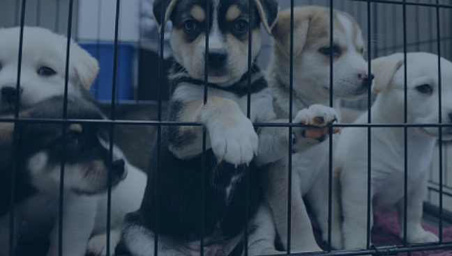

새로운 시대를 열어갈 다음 세대를 위한 새로운 학교
사단법인 교육실험실21의 거꾸로캠퍼스는 21세기 학습자를 위한 미래 역량 중심 교육을 제공하는 실험 학교입니다.
미래 사회에서 주체적인 삶을 살며 협력을 통해 긍정적인 변화를 이끄는 인재를 양성합니다.
미래 사회에서 주체적인 삶을 살며 협력을 통해 긍정적인 변화를 이끄는 인재를 양성합니다.
배움의 원칙
거꾸로캠퍼스가 실현하는
21세기 배움의 원칙 아홉 가지
자세히 보기 ➝
거꾸로캠퍼스가 실현하는
21세기 배움의 원칙 아홉 가지
자세히 보기 ➝
교육과정
거꾸로캠퍼스의 교육 과정과
교육 프로그램에 대한 안내
자세히 보기 ➝
거꾸로캠퍼스의 교육 과정과
교육 프로그램에 대한 안내
자세히 보기 ➝
학교생활
거꾸로캠퍼스를 만들어가는
학생과 교사들의 이야기
자세히 보기 ➝
거꾸로캠퍼스를 만들어가는
학생과 교사들의 이야기
자세히 보기 ➝
언론보도
[오마이뉴스] 시험,경쟁,졸업도 없는 학교...'거꾸로캠퍼스'의 실체
2020-11-18
공지사항
2021년 상반기 입학 설명회 참가 신청2020-09-15
공지사항
2021년 상반기 신입생 모집요강2020-09-15
언론보도
[EO] 카카오 김범수, 네이버 이해진이 투자한 미래학교2020-06-30
언론보도
[교육부] 미래 교육 실험실, 거꾸로캠퍼스에서 배운다2020-06-18
공지사항
2020년 하반기 입학설명회 참가 신청2020-06-15
학생과 교사가 함께 변화의 주체가 되어 미래의 학교를 만듭니다
거꾸로캠퍼스의 모든 순간은 특별합니다. 학생의 배움과 성장을 위해 변화하는 학교를 확인해보세요.
- 
COVID-19에도 멈추지 않았던 거꾸로캠퍼스의 협력적 문제해결 학습 교육
[Education In Focus]는 미주개발은행(Inter-American Development Bank)의 교육부가 운영하는 블로그입니다. 정책 입안자, 교육 전문...
2020-10-20 - 
나만의 언어를 갖고 새로운 관점을 만드는 시간
[알파랩 이야기] 거꾸로캠퍼스 X 파주타이포그라피배곳 나만의 언어를 갖고 새로운 관점을 만드는 시간 거꾸로캠퍼스에는 데이터 사이언스, 디자인, 메이킹...
2020-08-26  사회를 바라보는 눈이 다양해질 때 생기는 변화
사회를 바라보는 눈이 다양해질 때 생기는 변화[알파랩 이야기] 거꾸로캠퍼스 X 루트임팩트 사회를 바라보는 눈이 다양해질 때 생기는 변화 거꾸로캠퍼스에는 데이터 사이언스, 디자인, 메이킹, 임팩트...
2020-08-26- 
더 많은 사람들에게 창덕궁의 가치를 알리려면?
[프로젝트 이야기] 더 많은 사람들에게 창덕궁의 가치를 알리려면? 거꾸로캠퍼스의 학생들은 여러가지 프로젝트를 경험합니다. 개인의 관심에 따라 정한 주...
2020-08-12 - 
유기견 보호소에서 유기견 안락사가 일어나는 이유?
[프로젝트 이야기] 유기견 보호소에서 유기견 안락사가 일어나는 이유? 거꾸로캠퍼스의 학생들은 여러가지 프로젝트를 경험합니다. 개인의 관심에 따라 정...
2020-08-12  함께 배우고, 함께 하는 법을 배우는 곳
함께 배우고, 함께 하는 법을 배우는 곳[재학생 이야기] 함께 배우고, 함께 하는 법을 배우는 곳 3년을 꽉 채워 거꾸로캠퍼스에 다니고 있는 이남경 학생은 현재 광장시장 한복거리 부흥을 위한 앱 개...
2020-07-15